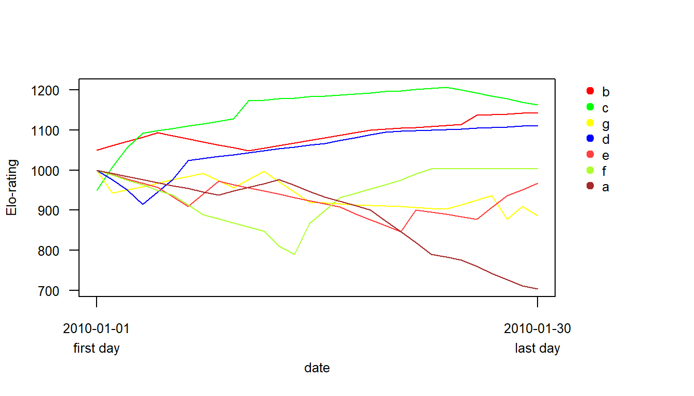

4. Elo-ratingの算出
4.1 Elo-ratingとは
Elo-ratingとは、各個体の相対的な強さを表す指標であり、そのときどきの勝敗によって常に変動する。主にサッカーやチェス、将棋などの競技で用いられている。時系列的に指標の変化を調べることができ、交渉結果によって指標が随時更新されていくという点で他の順位関連指標(e.g., David’s score)とは異なる(cf. Albers and Vries 2001)。
Elo-ratingでは、交渉のたびに交渉前のレーティングから予想される勝利確率と実際の交渉結果を比較し、これらがどの程度違うかによってレーティングを更新していく。具体的には、個体\(A\)と\(B\)のレーティングを\(R_A, R_B\)、個体\(A\)が\(B\)に勝つ確率を\(p_{AB}\)とするとき、交渉後のレーティング(\(R_{Anew}, R_{Bnew}\))は以下のように変化する(Neumann et al. 2011)。なお、\(k\)は定数で自由に設定できる。\(k\)が大きいほど1回の交渉がレーティングに与える影響が大きくなる。
Aが勝った場合
\[
R_{Anew} = R_A + (1-p_{AB})\times k\\
R_{Bnew} = R_B - (1-p_{AB})\times k
\]
Bが勝った場合
\[
R_{Anew} = R_A - p_{AB}\times k\\
R_{Bnew} = R_B + p_{AB}\times k
\]
なお、交渉前の勝利確率\(p_{AB}\)は以下の式で計算される(Wikipediaより)。
\[
p_{AB} = \frac{1}{10^{(R_B - R_A)/400} + 1}
\]
4.2 Rを用いた算出と可視化
EloRatingパッケージを用いたElo-ratingの詳しい算出方法については、こちらを参照。
EloRatingパッケージでは、以下のような日付と勝敗が示されたデータを用いてElo-ratingを算出する。
Elo-ratingはelo.seq関数を用いて算出できる。winner =に勝者の列の値を、loser =に敗者の列の値を、Dateで日付を、k =で\(k\)を指定する。その他の引数については、?elo.seqを参照。
summary関数で日付の範囲や交渉の数などの基本情報を確認できる。
## Elo ratings from 7 individuals
## total (mean/median) number of interactions: 33 (9.4/9)
## range of interactions: 7 - 11
## date range: 2010-01-01 - 2010-02-02
## startvalue: 1000
## uppon arrival treatment: average
## k: 100
## proportion of draws in the data set: 0ある日付におけるElo-ratingはextract_elo関数で以下のように求められる。extractdate =で日付を、ids =で値を求めたい個体名を指定する(指定しなければ全個体について出力する)。
## b d g
## 1137 1095 878日付を指定しなければ最終日のElo-ratingが求められる。
## b c d f e g a
## 1203 1148 1116 1004 982 843 704Elo-ratingの時系列的変化はeloplot関数で以下のように描画できる。from =とto =で日付の範囲を、ids =で描画したい個体名を指定する。
